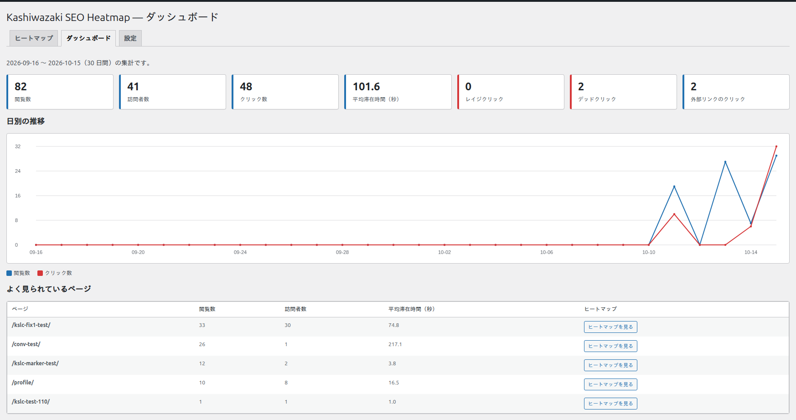
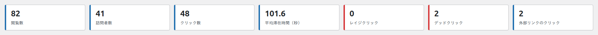
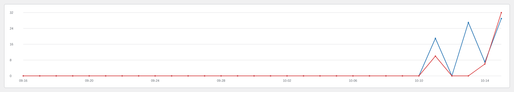
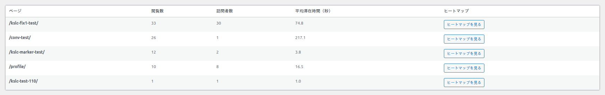
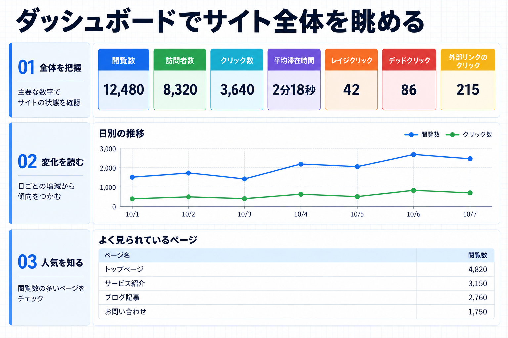

ダッシュボード画面
サイト全体の閲覧数・クリック数などの集計を、1 つの画面でまとめて確認できます。
この画面は、サイト全体を対象にした集計を表示します。個別のページを見たいときは「ヒートマップ画面」を使います。ダッシュボードでは、まず全体の傾向をつかみ、気になるページをヒートマップで詳しく見る、という流れが便利です。

集計の対象期間
見出しの下に、集計している期間が「（開始日）〜（終了日）（30 日間）の集計です。」の形で表示されます。この画面では直近 30 日間を集計します。個別の期間を指定したいときはヒートマップ画面を使ってください。
計測対象の投稿タイプがまだ選ばれていないときは、上部に「計測対象の投稿タイプがまだ選ばれていません。「設定」で投稿・固定ページ・カスタム投稿にチェックを入れると計測が始まります。」という警告が表示され、あわせて「設定を開く」のリンクが表示されます。この場合はまず設定画面で計測対象を選んでください。
指標カードの見方

| 指標 | 意味 |
|---|---|
| 閲覧数 | サイト全体でページが表示された回数です。 |
| 訪問者数 | サイトを見た訪問者の数です。同じ訪問者が何度来ても 1 人として数えます。 |
| クリック数 | サイト全体で行われたクリックの合計です。 |
| 平均滞在時間（秒） | 訪問者がページにいた時間の平均（秒）です。 |
| レイジクリック | 同じ場所を短時間に連打した回数です。数が多いときは、反応しない場所に気づかず押している人が多い可能性があります。 |
| デッドクリック | 押しても何も起きなかった回数です。数が多いときは、押せるように見えて押しても反応しない要素があるサインのことがあります。 |
| 外部リンクのクリック | 外部サイトへのリンクが押された回数です。 |
表示する期間が、生データの保持期間（設定の「自動削除」がオンのときの日数）より長いときは、訪問者数の表示が「訪問者数（直近 N 日）」に変わります。保持期間を過ぎた分の訪問者は数えられないためです。
「レイジクリック」と「デッドクリック」は、ほかの指標と違う色で目立つように表示されます。この 2 つの数値が大きいときは、ヒートマップ画面で「表示するデータ」を該当する種類に切り替えて、どの場所で起きているかを確認すると原因を探しやすくなります。
日別の推移

閲覧数とクリック数の日ごとの変化を折れ線グラフで表示します。グラフの凡例は「閲覧数」と「クリック数」の 2 つです。
- 特定の日だけ数値が跳ね上がっていれば、その日に何か話題になった可能性があります。
- 閲覧数は増えているのにクリック数が増えていないときは、訪問者が目的の場所を見つけにくいのかもしれません。
よく見られているページ

| 列 | 意味 |
|---|---|
| ページ | ページのタイトルです。 |
| 閲覧数 | そのページが表示された回数です。 |
| 訪問者数 | そのページを見た訪問者の数です。 |
| 平均滞在時間（秒） | そのページにいた時間の平均（秒）です。 |
| ヒートマップ | そのページのヒートマップ画面へ移動するボタンです。 |
「ヒートマップを見る」ボタン: 一覧の中のこのボタンを押すと、そのページを選んだ状態のヒートマップ画面へ移動します。「数字は大きいのに、なぜかクリックが少ない」といったページを、そのまま詳しく調べられます。
まだデータが無いときは、一覧に「まだデータがありません。」と表示されます。

うまく使うコツ
- まずダッシュボードで全体の傾向をつかみます。
- 「よく見られているページ」で気になるページを見つけます。
- そのページの行にある「ヒートマップを見る」を押して、詳しく確認します。
数値は日々少しずつ変わります。1 日の数字だけで判断せず、しばらく見て傾向をつかむと、改善すべき場所が見つけやすくなります。